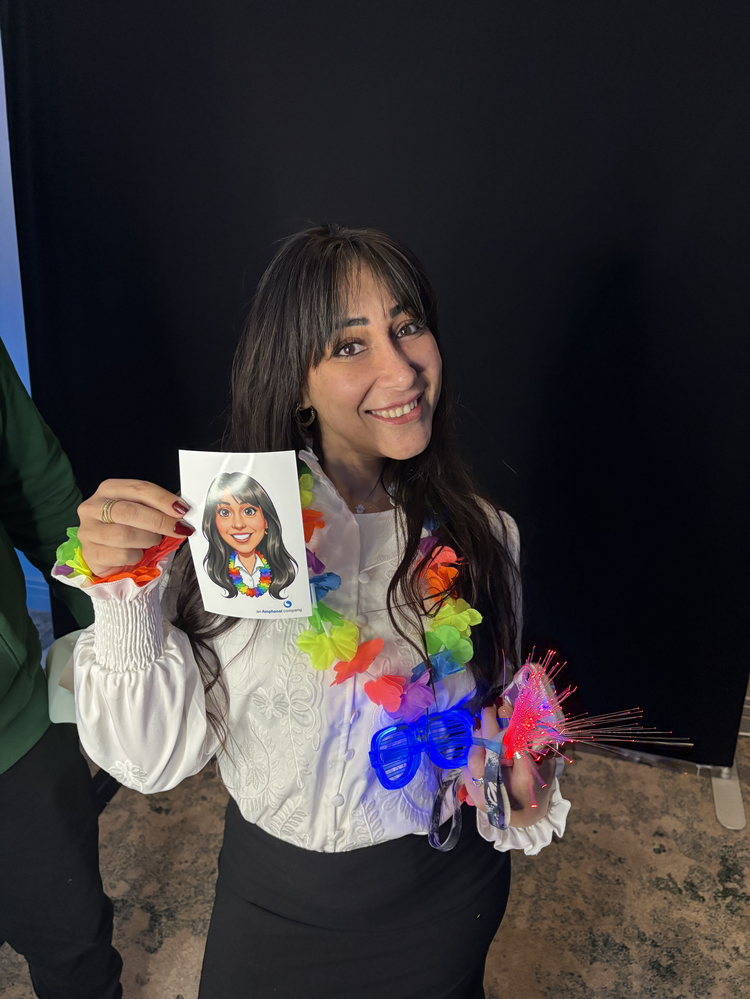
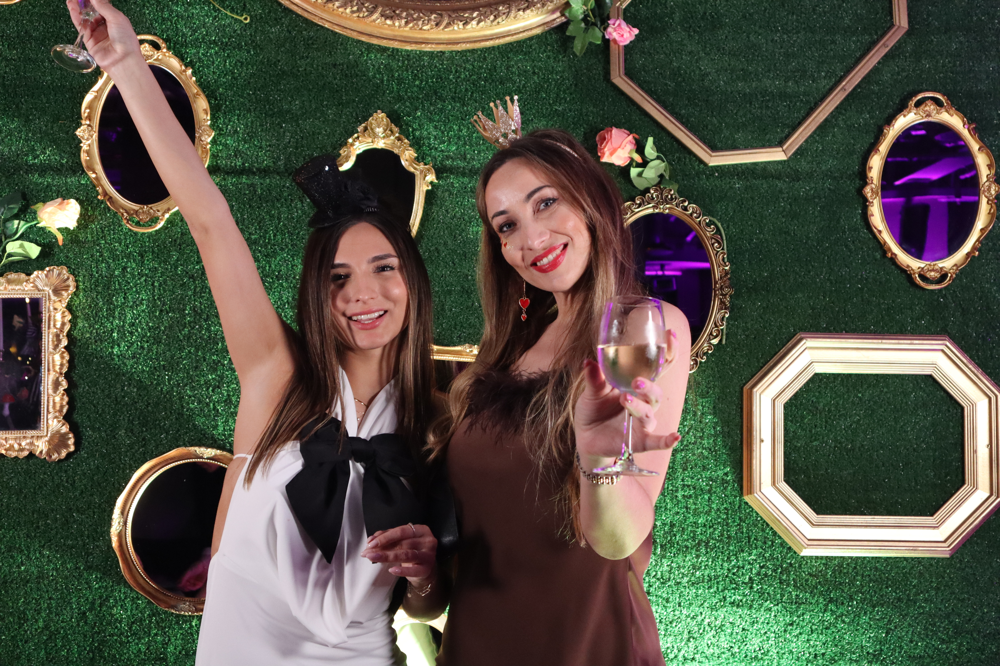
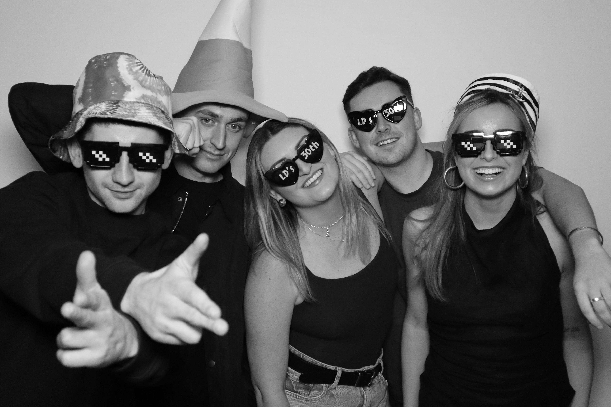
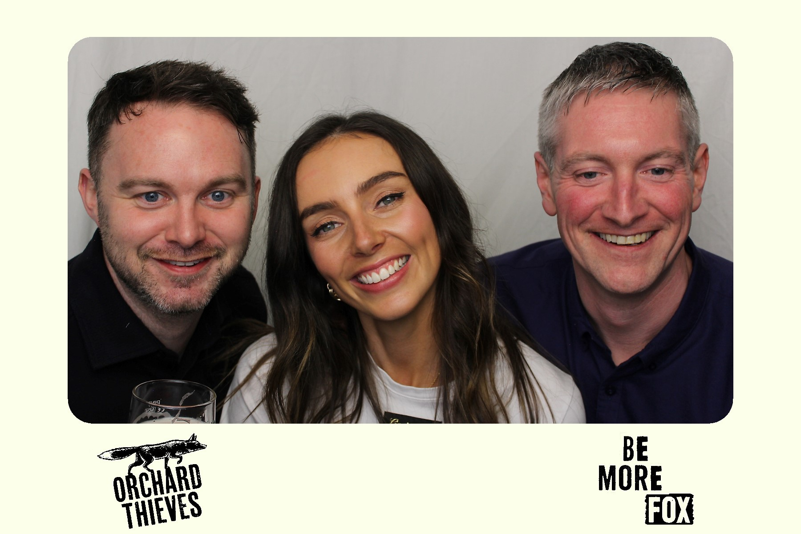
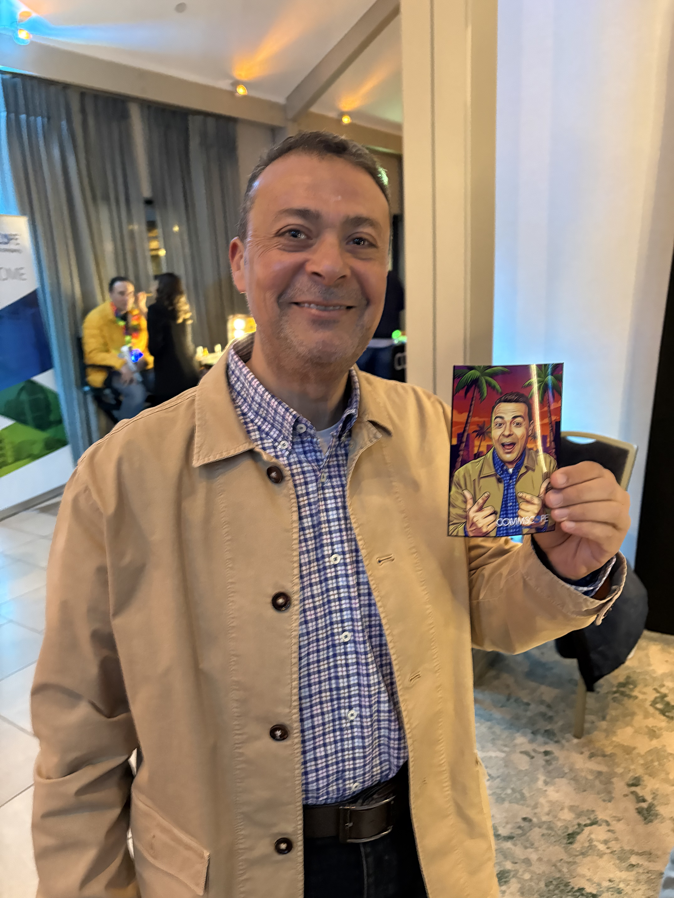

Photobooth Galway
Photobooth Galway by Photobooth Guys brings premium 360 booths, glam booths and magazine booths to weddings, Races week hospitality, and corporate nights right across the west. From the cobbled streets of the Latin Quarter to the wild Atlantic coastline of Connemara, Galway knows how to celebrate — and our photobooths tap straight into that energy. Whether you are hosting a black-tie reception at Glenlo Abbey Hotel, a Galway Races corporate marquee, or a lively birthday at The g Hotel, we bring the technology and the craic in equal measure.
A short reel from recent events — wedding receptions, Races week marquees, Christmas parties and corporate nights. Every frame here was captured by a Photobooth Galway booth run by our own team.
360 Photobooth Galway
Wedding Reception · Glenlo Abbey
Glam Portraits
Photobooth Galway · Ring-light StudioAfter-Hours Energy
Photobooth Galway · Late Reception
Custom Print
Photobooth Galway · Galway Bay Hotel
Editorial Cover
Magazine Photobooth Galway · Corporate
Party Night
Photobooth Galway · The g Hotel
Races Week Hospitality
360 Photobooth Galway · BallybritEvery booth in this gallery was supplied, set up and attended by our own Galway team.
View the full gallery →Events We Cover
Castle receptions at Lough Cutra, intimate celebrations at Glenlo Abbey, or seaside joy at Galway Bay Hotel -- our booths have been part of countless Galway love stories. Explore wedding booths.
Team-building days at Menlo Park Hotel, conferences at the Galway Bay Hotel, and corporate hospitality at the Races. Our branded booths deliver measurable engagement for Galway business events. See corporate options.
Galway knows how to throw a party. Milestone birthdays, hen and stag celebrations, and private bashes at venues across the city get an extra spark with our photo booths. Browse party booths.
Galway's thriving tourism and festival calendar makes it ideal for experiential marketing. Our branded photo booths generate shareable content and capture lead data at pop-up events along the Wild Atlantic Way. See branded options.
Galway's magical Christmas market atmosphere extends into office parties and festive dinners at The g Hotel, Salthill Hotel, and beyond. Our festive booth themes add the finishing touch. Festive booth options.
The Galway Races are legendary, and our photo booths are a staple in hospitality tents and VIP areas during race week. Capture the glamour and excitement with instant shareable content. Explore our booths.
Our Fleet
Three of our most popular booth styles for Galway events. Each comes with full delivery, professional setup, and a dedicated attendant for the duration of your hire.
 From €750
From €750
The ultimate crowd-pleaser at Galway events. Guests step onto the platform while a rotating camera captures stunning slow-motion 360-degree videos with custom overlays and AI effects. Ideal for Galway Races hospitality and high-energy celebrations.
 From €730
From €730
Studio-quality glamour portraits with professional ring lighting and flattering beauty filters. Galway wedding guests and Races attendees love the red-carpet feel and instantly shareable black-and-white portraits.
 From €1,200
From €1,200
Transform Galway guests into magazine cover stars. Custom editorial layouts make every photo look like it belongs on the cover of a glossy publication. A huge hit at Galway fashion events, brand launches, and stylish weddings.
Venue Network
From castle weddings in South Galway to city-centre corporate nights and Races marquees in Ballybrit, our Photobooth Galway team delivers and sets up at every major venue across the county.
Galway Service
We regularly service Galway from our Westmeath base, arriving with plenty of time for setup. Our team knows the Galway venue landscape intimately, from city-centre hotels to remote Connemara estates.
From Galway Races to the Arts Festival, we understand the unique demands of high-footfall event environments. Our booths are designed for fast turnaround, high volume, and maximum guest engagement.
We bring everything we need -- our own 4G/5G connection, professional lighting, and all equipment. Your Galway venue does not need to provide anything beyond a standard power outlet and a small floor space.
Questions
Our Galway photo booth packages start from €750 for the 360 booth. Premium packages including the magazine booth start from €1,200. A travel supplement applies for Galway. Every booking includes unlimited prints, custom overlays, and a dedicated attendant. Get an instant quote tailored to your event.
Yes, Galway is roughly 90 minutes from our Westmeath headquarters and is one of our busiest regions. We travel to Galway regularly for weddings, corporate events, and festivals. Our team arrives well in advance to ensure a stress-free setup at your venue.
Galway Races week is one of our most popular booking periods. We supply branded booths, 360 video booths, and glam booths for hospitality marquees, corporate entertaining, and private Races parties. These dates sell out months ahead, so early booking is strongly recommended.
We have worked at Arts Festival fringe events, after-parties, and brand activations during the festival. Our booths complement Galway's creative spirit perfectly. Short-hire and pop-up packages are available for festival-period events.
We cover every venue in Galway city and county, including Glenlo Abbey Hotel, Galway Bay Hotel, Lough Cutra Castle, The g Hotel, Menlo Park Hotel, and Salthill Hotel. We also set up at private residences, marquees, and community venues across the region.